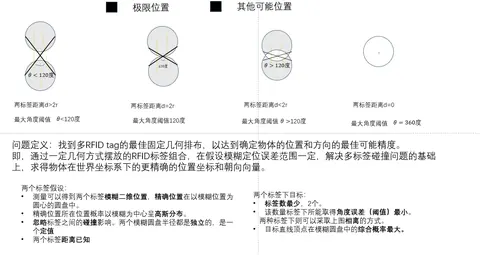

定位研究Localization research
RFID/NFC 电子视觉标签定位RFID/NFC electronic visual tags for localization
面向遮挡环境定位，以 RFID 远场检出与多 NFC 近场读取估计位置和朝向；完成标签布局研究、误差分析与实验设计。For localization under occlusion, RFID detection and multiple NFC readers estimate position and orientation; the study covers tag layouts, error analysis, and experimental design.
- 研究内容Focus
- 标签设计、几何分析与定位Tag design, geometry, and localization
项目背景Background
视觉标记在遮挡和弱光中可能失效，射频标签则能补充不依赖直接视觉的辨识信息。项目讨论如何将远场检出与近场高精度几何信息结合。Visual markers can fail under occlusion or low light. Radio tags provide complementary identification, motivating a combination of far-range detection and near-range geometry.
远距离发现目标与近距离确定姿态具有不同的读取范围和精度要求。将二者分层处理，有助于分析标签数量、安装空间与有效读取区域之间的取舍。Discovering a target at range and estimating its pose nearby impose different read-range and precision requirements. A hierarchical design supports analysis of trade-offs among tag count, mounting space, and readable regions.
任务说明Task
在物体上布置 RFID 与多 NFC 标签，通过读取位置关系推断物体位置和朝向，并研究给定尺寸、读取范围与误差要求下的标签数量和排布。Place RFID and multiple NFC tags on an object, infer location and orientation from their spatial readings, and study tag count and layout under size, read-range, and error constraints.
先利用 RFID 确定目标是否存在，再根据多个 NFC 的读取关系建立位置和方向约束。通过几何分析比较三角形、多边形和多组合标签布置，给出误差与覆盖范围的实验设计。RFID first indicates target presence; multiple NFC readings then constrain location and orientation. Geometric analysis compares triangular, polygonal, and multiple composite-tag layouts to guide error and coverage experiments.
设备说明Tag and reader setup
方案包含无源 RFID、NFC 标签、对应读卡器与相机。RFID 用于较远距离发现目标，NFC 读取用于近距离几何约束。The concept uses passive RFID and NFC tags, readers, and cameras. RFID detects targets at greater range, while NFC readings provide local geometric constraints.
系统和关键技术System and key technologies
采用 RFID 粗检出与多 NFC 近场几何约束的分层思路，技术工作集中在标签布局与误差分析。A hierarchical design combines coarse RFID detection with geometric constraints from multiple NFC tags, focusing on layout and error analysis.
- RFID 粗检出与 Grouping-NFCRFID detection and Grouping-NFC：: 先利用 RFID 确定目标的粗略存在或位置范围，再根据多个 NFC 的读取关系建立更细的定位与定向约束。Use RFID for coarse target detection or location bounds, then establish finer position and orientation constraints from multiple NFC readings.
- 标签几何布局与位姿约束Tag geometry and pose constraints：: 比较三角形、多边形及组合标签排布，分析已知相对位置与读取范围对物体位置和朝向估计的约束能力。Compare triangular, polygonal, and composite layouts, analyzing how relative tag positions and read ranges constrain object position and orientation.
- 最坏误差与覆盖范围分析Worst-case error and coverage analysis：: 研究定向精度、读取区域与标签数量之间的关系，并据此组织实验方案；当前展示为几何研究与实验设计。Study the relationships among orientation precision, readable regions, and tag count to structure experiments; the work shown remains geometric analysis and experimental design.

研究记录Research material
PPT 主要包含问题定义、几何分析和实验设计，展示单标签与多标签层级的设计思路。The material documents problem formulation, geometric analysis, and experimental design for single- and multiple-tag configurations.